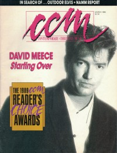

David MeeceOn the cover
March 1990
CCM | Media coverage- Aug 1979 in Contemporary Christian Music "Talent: David Meece", by Bob Darden
- Jan 1981 in Contemporary Christian Music "Impressions of a Meece Modern Industry", by Don Cusic
- Sep 1981 in Charisma "David Meece", by Sherry Andrews
- Sep 1981 in Group "Christian Music: Ministry or Show Biz?", by Tom Schultz
- Sep 1983 in Contemporary Christian Magazine "David Meece"
- Dec 1983 in Contemporary Christian Magazine "David Meece"
- Jan 1985 in Campus Life "In Their Own Words: David Meece"
- Jul 1986 in Contemporary Christian Magazine "Concert Review: Huntington North High School, Huntington Indiana", by Susan Harley
- Sep 1986 in Campus Life "Values In Media: David Meece"
- Apr 1987 in CCM "In Concert: Milligan College, Johnson City, TN", by Louis Whitinger
- Jul 1987 in CCM "Coming To Terms With Himself", by Elisabeth D Gilland
- Jan 1988 in CCM "In Concert: Good Time At A Bad Time", by Mark Eischer
- Feb 1989 in CCM "In Concert: Burnsville, MN", by Patti Lundquist
- Apr 1989 in Christian Herald "Singing Through The Pain", by Sandra P. Aldrich
- Mar 1990 in CCM "Everybody Needs A Little Help", by Thom Granger
- Jul 1990 in Campus Life "We Are Still The Reason"
- Jun 1993 in CCM "David Meece Turns Inside Out", by Perucci Ferraiuolo
- Oct 1993 in The Lighthouse "Concert Review: Selinsgrove, PA", by Bryan W. Brendley
- Dec 2004 in CCM "List-O-Rama: 5 Christmas Songs Found In The CCM Top 100 Greatest Songs", by Chris Well
Albums & reviews:1977: I Just Call on You
1979: Everybody Needs a Little Help 1995: Odyssey
Award Summary (Nominations / Wins)
Dove AwardsBooks about David Meece |